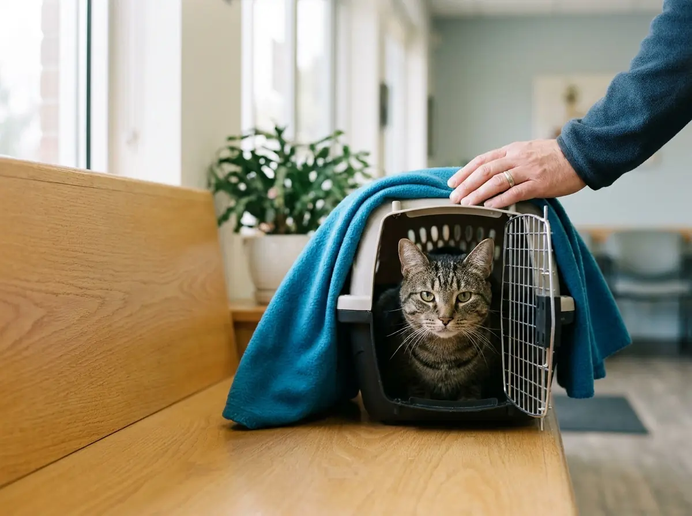

Strona główna / Pierwsza wizyta
Dla właściciela
Pierwsza wizyta bez stresu.
Kilka rzeczy, które warto przygotować, żeby wizyta poszła sprawnie, a zwierzę denerwowało się jak najmniej.

Co zabrać
- książeczkę zdrowia lub paszport
- wyniki badań i wypisy z innych gabinetów
- nazwy leków, które zwierzę dostaje
- ulubiony smakołyk albo zabawkę
- listę pytań, żeby niczego nie zapomnieć
Jak przywieźć zwierzę
- kot zawsze w zamkniętym transporterze
- pies na krótkiej smyczy; jeśli bywa nerwowy, w kagańcu
- transporter przykryj kocem, to uspokaja
- przed zabiegiem zapytaj, czy zwierzę ma być na czczo
FAQ
Najczęstsze pytania
Czy trzeba się umawiać?
Najlepiej zadzwonić wcześniej: 536 041 341. Wtedy wiemy, że przyjedziesz, i krócej czekasz.
Co zrobić, gdy coś się dzieje w nocy?
Zadzwoń pod 536 041 341. Lekarz powie, czy trzeba przyjechać od razu. Szczegóły znajdziesz na stronie Nagły przypadek.
Ile kosztuje wizyta?
Orientacyjne ceny są w cenniku. Dokładną kwotę podajemy przed leczeniem. W nocy, w niedziele i święta doliczamy dopłatę za wizytę dyżurną.
Jakie zwierzęta przyjmujecie?
Psy i koty. O inne gatunki zapytaj przez telefon. do potwierdzenia
Czy można zapłacić kartą?
Formy płatności potwierdzimy wkrótce. do potwierdzenia
Czy jest parking?
Informację o parkingu dodamy wkrótce. do potwierdzenia